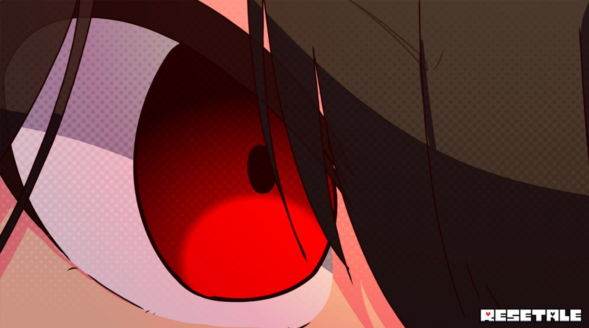
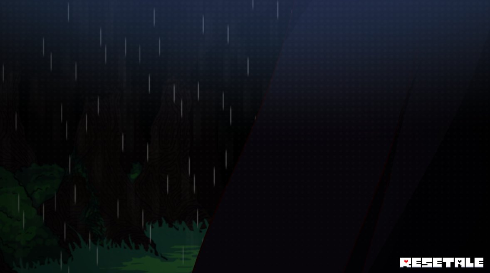
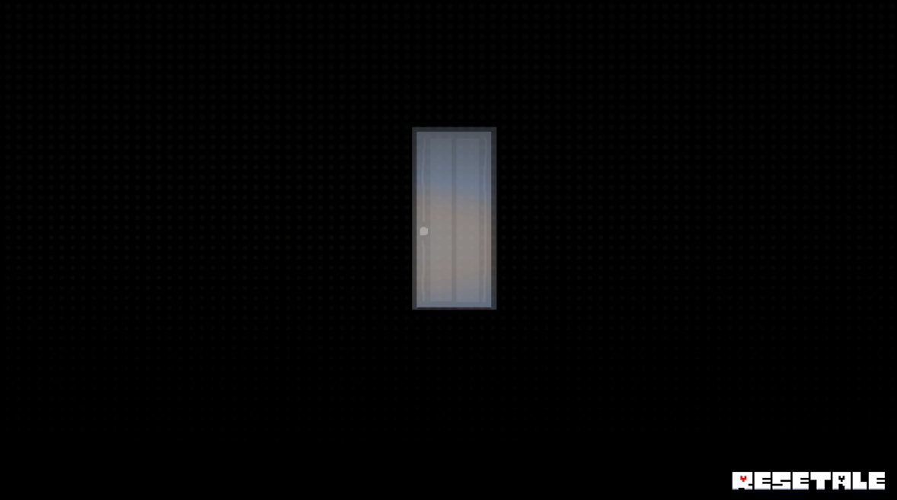
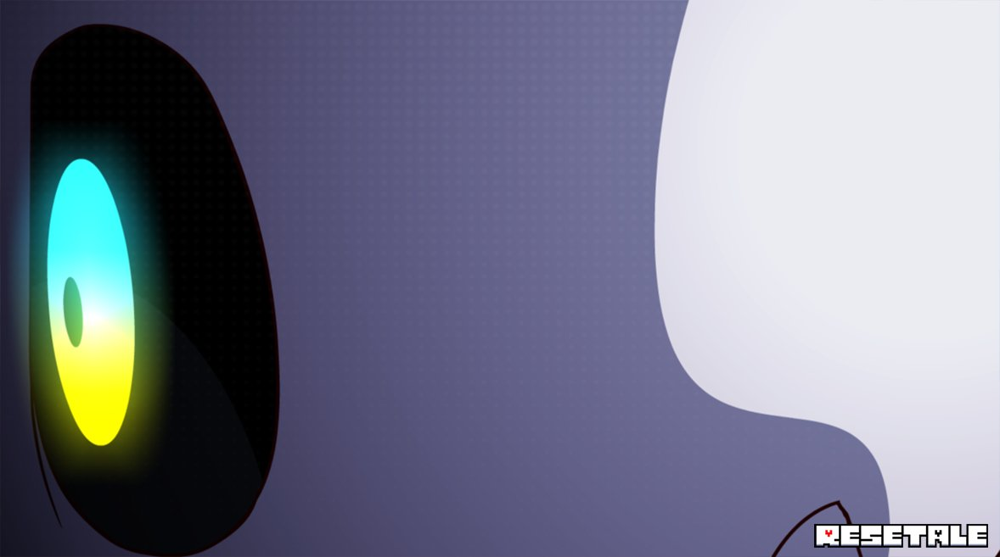
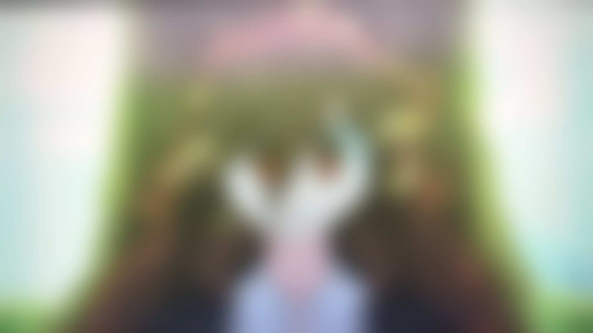

* RESETALE is a alternative universe
(AU) of UNDERTALE
* Meet old friends but also new foes !
* Visit the original timeline for an epic Story !
* Discover the many secrets throughout inside and outside the Episodes !
* And Complete the book.
* Meet old friends but also new foes !
* Visit the original timeline for an epic Story !
* Discover the many secrets throughout inside and outside the Episodes !
* And Complete the book.




